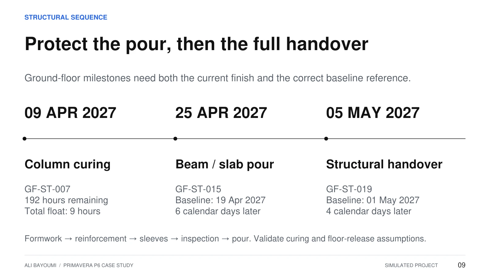
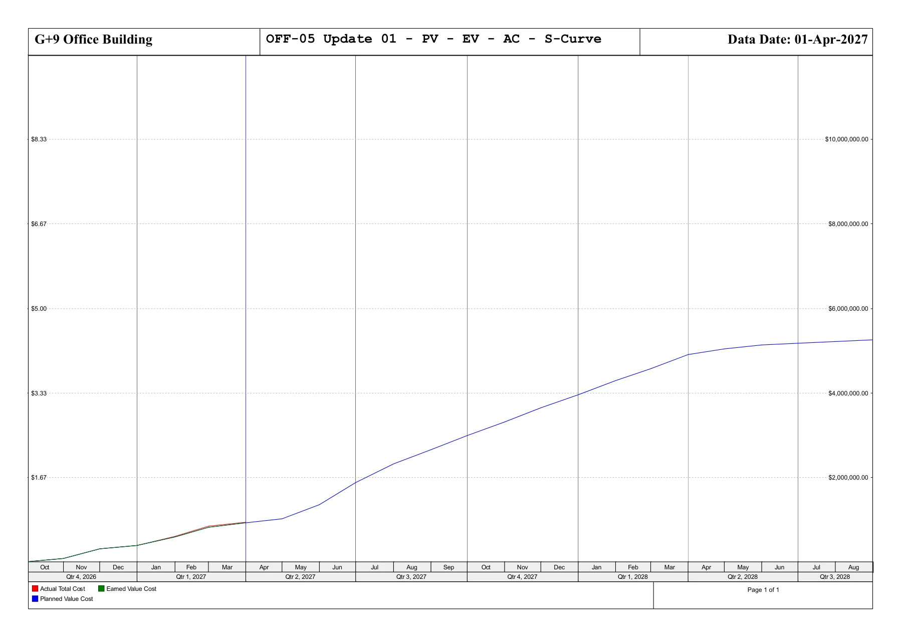
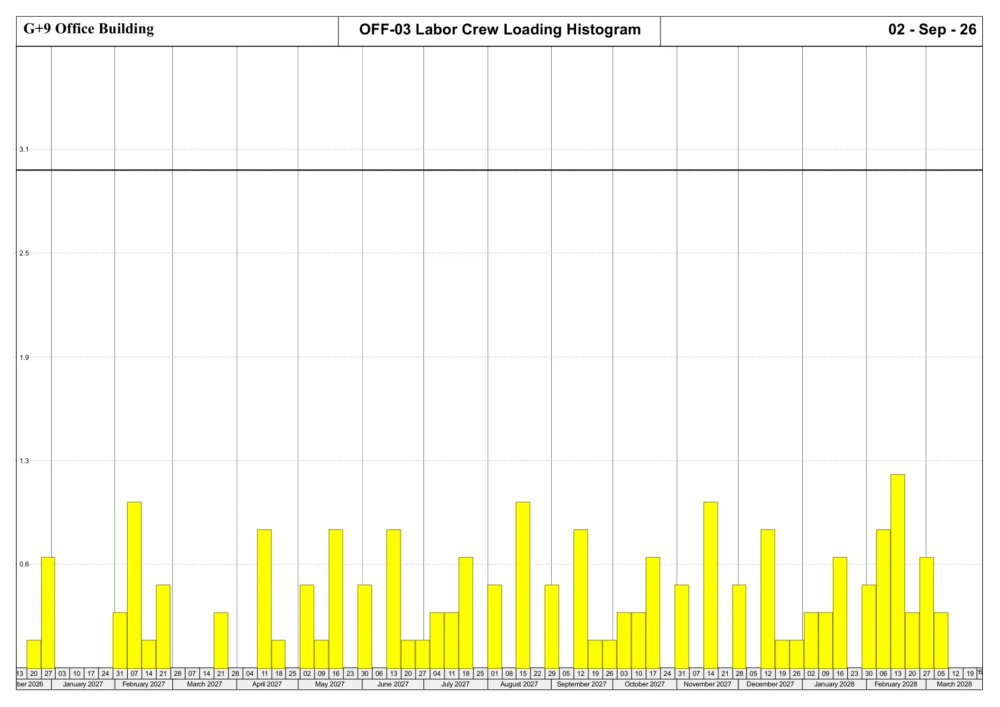
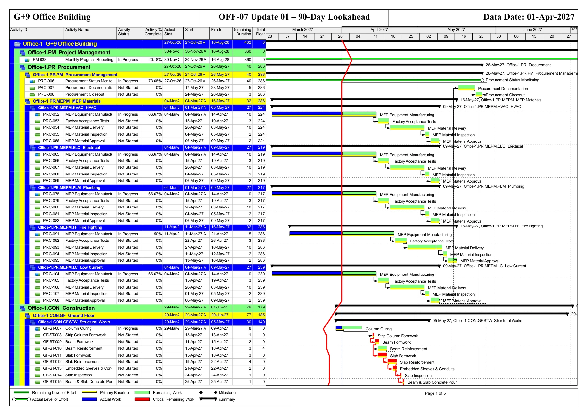

Establish the baseline
Structure the WBS from engineering through handover. Define calendars, activity durations, floor-to-floor sequencing, dependencies and milestones.
PROJECT 01 / PRIMAVERA P6
A complete building programme.
A reporting story that can be explained.
01 / PROJECT OVERVIEW
An integrated building programme from engineering and procurement through construction and handover. A detailed P6 baseline and update, supported by resource planning, earned value analysis and management reporting.
I developed the WBS, logic, calendars, resources and cost loading, then used the update to examine critical activities, earned value, finish forecasts and the next 90 days of work.
02 / PLANNING METHODOLOGY
Structure the WBS from engineering through handover. Define calendars, activity durations, floor-to-floor sequencing, dependencies and milestones.
Preserve the baseline; status actual and remaining work to one data date. Review CPM, float, resource loading and the saved leveling results.
Reconcile earned value and cost. Separate finish dates, test the reporting assumptions and turn the 90-day lookahead into priorities.
03 / SCHEDULE & CRITICAL PATH
CPM early dates, leveled dates and the baseline answer different questions. They must be compared on the same milestone scope.
Preserved early date in the saved schedule.
HO-023 remaining / leveled finish.
Original baseline HO-023 finish.
The saved leveled handover is 6 calendar days before baseline. This comparison alone does not demonstrate recovery.
Track ground-floor curing, beam/slab pour and full structural handover separately. The selected P6 structural report ends at the pour and does not represent the complete longest path.
incomplete activities with zero total float
*Above 44 own-calendar working days. A diagnostic threshold, not a DCMA compliance score.

04 / EARNED VALUE & COST CONTROL
A positive schedule index needs to be traced to the activities producing it. In this update, the entire positive variance comes from reporting LOE.
Source: reconciled P6 EVM totals in the new presentation, slides 6–8. Values represent this simulated reporting snapshot.
Positive schedule variance: +$4,434.59
Cost variance: −$12,565.41
The SPI gain is entirely reporting LOE. PM-038 Monthly Progress Reporting contributes all $4,434.59 of positive schedule variance. Outside that activity, PV = EV = $826,590.00. SPI alone does not establish construction ahead of plan.
The completed foundation activities CIV-013 and CIV-017 account for $7,500 and $9,500 of overrun. Both have zero ETC, so the $17,000 remains in the forecast.
| Activity | Budget | Actual cost | Overrun |
|---|---|---|---|
| CIV-013 | $53,368 | $60,868 | +$7,500 |
| CIV-017 | $63,022 | $72,522 | +$9,500 |
FORECAST AT COMPLETION
$5,268,281.00EAC = actual cost + remaining cost

05 / RESOURCE PLANNING
Labor crews, equipment and materials were assigned to the schedule. The review separates direct resource delays from differences between stored dates.
Recorded in the leveling log; 469 predecessor delays and zero activities unable to level.
Incomplete activities whose preserved early and remaining dates differ. This is a separate measure from the 31 direct delays.

06 / 90-DAY LOOKAHEAD
Coordinate ground-floor structure, masonry, MEP first-fix readiness and repetitive floor production. Track procurement gates through inspection and approval.
| Package | Manufacture finish | FAT finish | Delivery finish | Approval finish |
|---|---|---|---|---|
| HVAC / Electrical / Plumbing / Low current | 14 Apr | 19 Apr | 03 May | 09 May |
| Fire fighting | 21 Apr | 26 Apr | 10 May | 16 May |
Inspection remains a gate between delivery and approval. Dates shown are finish dates from the same lookahead.

Include incomplete activities with Start < 01 Jul 2027 and Finish ≥ 01 Apr 2027. The corrected set adds FL1-IP003 and GF-MEPSF006 / GF-MEPSF007, which start on 30 Jun.
07 / CONCLUSIONS & NEXT ACTIONS
Confirm curing, stripping and floor-release assumptions. Track the pour and full ground-floor handover separately.
Track manufacture, FAT, delivery, inspection and approval. Keep the June 30 starts in the lookahead.
Explain completed-work cost overruns, reconcile the leveling metrics and correct the baseline used in report comparisons.
The original network contains 1,876 relationships: 1,772 FS, 87 SS, 16 FF and 1 SF. The audit found 112 positive lags, no negative lags, and 12 activities with SS-only successors. No constraints, expected finishes or future actuals were found.
Calendars have no 2026–2028 holiday exceptions. Construction methods, cost mapping and external resource availability remain assumptions. Seven of eight original ground-floor report baseline rows differ from the embedded baseline; the new presentation uses the corrected milestone comparisons.
These observations come from the saved snapshot and audit. No fresh P6 scheduling or resource-leveling run is claimed on this website.
08 / CONSULTANT REVIEW TRAINING
Three exercises covering the review of a contractor programme, evidence-based progress reporting and a simple prospective time-impact model.
C-01: calendar exceptions. The existing portfolio audit found no holiday exceptions for 2026–2028. This is a query to resolve with the contractor before accepting working-time assumptions.
| Review item | Comment / required action |
|---|---|
| Potential effect | Activities could fall on dates when crews are unavailable. The completion impact has not been quantified. |
| Review comment | Submit the agreed holiday and shutdown calendar. Explain any continuous-work calendars, including curing. |
| Required response | The planner updates a copy, recalculates CPM and compares the same handover milestone. Retain the response and calculation log. |
| Training action record | Owner: contractor planner. Due: 02 Apr 2027. Status: open pending evidence. |
Source finding: existing portfolio slide 12 and its notes. The review wording and response deadline are assumed. No full P6 rerun or quantified calendar delay is claimed.
Assumed slab package: 400 m³. Reporting cut: 01 Apr 2027. Progress recognises installed and accepted concrete against the same defined scope.
| Basis | Quantity | Progress | Training evidence |
|---|---|---|---|
| Planned to date | 200 m³ | 50% | Assumed quantity plan |
| Contractor reported | 180 m³ | 45% | Assumed daily report |
| Verified in exercise | 160 m³ | 40% | Mock measurement Q-001 and inspection release IR-001 |
Verified progress is 10 percentage points below plan: a 40 m³ shortfall. A further 20 m³ reported by the contractor remains unverified.
| Log | Finding | Action / owner | Due | Status |
|---|---|---|---|---|
| D-01 | 40 m³ below plan | Site manager: submit a production recovery plan | 02 Apr 2027 | Open |
| V-01 | 20 m³ unverified | Site engineer: reconcile measurements and inspection records | 02 Apr 2027 | Open |
Q-001 and IR-001 are assumed record references, not supplied signed evidence. In practice, check location-tagged daily reports, delivery tickets, measured quantities and inspection releases against one reporting cut-off. Unverified work is not automatically rejected work.
This 40% applies only to the training slab package. Whole-project progress needs documented package weights. It does not replace the original duration-based P6 EV or prove a delay to handover.
An assumed design clarification blocks installation for 4 working days. The model starts from a pre-event update at 05 Apr 2027, 08:00, with prior enabling work assumed complete and remaining work unstarted.
Inserted fragnet and controlling sequence
Before the event, release links directly to installation. All links are finish-to-start with zero lag. A parallel 8-day documentation activity also precedes handover and remains unchanged.
| Activity | Pre-event update | With inserted event |
|---|---|---|
| Installation | 05 Apr 2027 – 16 Apr 2027 | 09 Apr 2027 – 22 Apr 2027 |
| Testing | 19 Apr 2027 – 21 Apr 2027 | 23 Apr 2027 – 27 Apr 2027 |
| Documentation | 14 Apr 2027 finish | 14 Apr 2027 finish |
| Training handover | 21 Apr 2027, 17:00 | 27 Apr 2027, 17:00 |
Modelled handover impact: +4 working days / +6 calendar days.
Pre-event remaining duration = max(10 + 3, 8) = 13 working days. Impacted duration = max(4 + 10 + 3, 8) = 17 working days. Difference = 4. Documentation float changes from 5 to 9 working days. The weekend makes the calendar-date difference 6 days.
Calendar: Monday–Friday, 08:00–12:00 and 13:00–17:00, without holidays. No date constraints, resource leveling, concurrent events, mitigation or acceleration. These are explicit teaching assumptions, not findings about an actual contract.
This is an independently calculated miniature CPM model. It is not a native P6 run, an analysis of all 1,206 activities, or a revision to the original HO-023 forecast. A four-day event need not cause four days of completion delay when float or other controlling paths exist.
The time-impact result can support an EOT review. Entitlement still requires the governing contract, event responsibility and supporting records. Compensation requires a separate assessment.
Learning scope: Introductory knowledge of FIDIC-based contract procedures. Identify the form, edition and Particular Conditions before checking notices and assessment procedures. No clause number, notice period or contractual entitlement is assumed.
Method references: SCL Delay and Disruption Protocol, 2nd edition (2017); FIDIC Golden Principles (2019).
THE COMPLETE PRESENTATION
18 slides covering the P6 case study, contractor programme review, progress verification and an illustrative TIA.
GET IN TOUCH
For planning, scheduling and project controls opportunities.